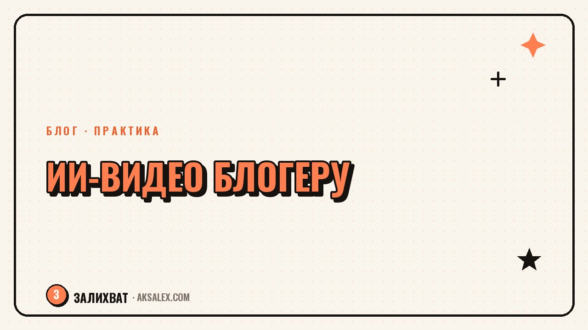

Нейросети для генерации видео: что выбрать блогеру

За последний год нейросети для генерации видео заметно подросли: теперь можно получить короткий ролик по текстовому описанию без камеры, актёров и монтажа. Для блогера это звучит заманчиво, но важно понимать границы - такие сервисы хороши для определённых задач и совсем не годятся для других. Разберём, что реально умеют нейросети для видео сейчас, где они экономят время блогеру, а где лучше потратить время на обычную съёмку.
Что умеют нейросети для генерации видео сегодня
Сервисы генерации видео по тексту создают короткие клипы - обычно от нескольких секунд до минуты - на основе текстового описания сцены или готового изображения. Технология за последние пару лет сильно продвинулась в качестве картинки и плавности движения, но стабильность персонажа между разными сценами и точное выполнение сложных инструкций всё ещё остаются слабым местом большинства инструментов.
Для блогера это означает: реалистичные пейзажи, атмосферные вставки, абстрактные визуальные эффекты, анимация продукта получаются неплохо. А вот ролик, где нужно показать конкретного человека с точной мимикой и синхронной речью на протяжении минуты, сервисы пока выдают с заметными артефактами - рассинхрон губ, странная геометрия рук, скачки освещения между кадрами.
Где генеративное видео реально подходит блогеру
- Атмосферные вставки и фоновые планы для сторителлинга
- Анимация статичного фото или иллюстрации для обложки
- Короткие абстрактные переходы между сценами ролика
- Визуализация идеи, которую дорого или невозможно снять вживую
- Черновик сториборда перед настоящей съёмкой
Обзор основных сервисов
На рынке сейчас несколько заметных игроков, и у каждого свой акцент: кто-то силён в реализме и физике движения, кто-то - в скорости и доступности, кто-то больше заточен под продуктовые ролики и рекламные форматы. Разница между ними ощущается уже на этапе первых генераций, поэтому стоит пробовать бесплатные лимиты перед тем, как платить за подписку.
Важно помнить: цены и лимиты у таких сервисов меняются быстро, иногда раз в несколько месяцев, поэтому перед оплатой всегда проверяй актуальные условия на сайте сервиса, а не ориентируйся только на то, что написано в старых обзорах.
| Сервис | Сильная сторона | Для чего в блоге |
|---|---|---|
| Runway | Монтажные инструменты + генерация | Вставки, эффекты, быстрый черновик |
| Kling | Реализм движения и физики | Атмосферные планы, природа, объекты |
| Sora | Связность длинных сцен | Сложные сюжетные вставки |
| Pika | Простота и скорость генерации | Быстрые короткие клипы для сторис |
| Luma Dream Machine | Качество картинки из фото | Анимация обложек и статичных кадров |
Как встроить генеративное видео в процесс съёмки блога
Самый рабочий сценарий - не заменять съёмку целиком, а усиливать её. Например, ты снял говорящую голову на телефон, а недостающий атмосферный план - закат, город, абстрактный переход - добираешь генерацией, потому что ехать и снимать его отдельно не было времени. Это экономит реальные часы без потери качества финального ролика.
Второй рабочий вариант - превью и черновики. Перед тем как снимать дорогой или сложный план, можно сгенерировать быстрый вариант сцены, чтобы увидеть композицию и решить, стоит ли она реальной съёмки. Это особенно удобно, если ты работаешь с оператором или монтажёром и нужно быстро показать идею словами и картинкой, а не долгим объяснением.
Генеративное видео - это не замена камере, а ещё один инструмент в раскадровке. Лучше всего оно работает там, где зритель не должен заметить, что это не настоящая съёмка.
Короткий план внедрения
- Определи 1-2 типа вставок, которые тебе реально нужны (фон, переход, атмосфера)
- Протестируй бесплатный лимит 2-3 сервисов на одном описании
- Сравни результат по реализму и соответствию твоему стилю
- Выбери один сервис под регулярную задачу, а не подписывайся на все сразу
- Держи отдельную папку с удачными промптами, чтобы не придумывать заново
Чего пока не стоит ждать от генеративного видео
Главное ограничение - узнаваемое лицо блогера. Если твой контент держится на доверии к конкретному человеку, заменять живую съёмку генерацией рискованно: зритель быстро замечает неестественную мимику или рассинхрон речи, и это бьёт по доверию сильнее, чем более простое видео без спецэффектов. Для контента с лицом в кадре съёмка на телефон пока надёжнее.
Второе ограничение - длинные связные сцены с несколькими действиями подряд. Чем длиннее и сложнее сценарий одного клипа, тем выше шанс, что нейросеть «потеряет» деталь на середине - поменяется цвет одежды, исчезнет предмет из кадра. Для таких задач надёжнее снимать самому или дробить ролик на короткие генерации и собирать их в монтаже.
Когда лучше снять самому
- Любой контент, где лицо блогера - часть доверия аудитории
- Длинные сцены с несколькими последовательными действиями
- Точная демонстрация реального продукта или процесса
- Контент, где важна документальная достоверность момента
Авторские права и прозрачность с аудиторией
Отдельный момент, который легко упустить - условия использования сгенерированного контента у конкретного сервиса. У разных платформ разные правила: где-то коммерческое использование доступно только на платном тарифе, где-то есть ограничения на вставки с узнаваемыми людьми или брендами. Перед тем как использовать видео в рекламном посте, стоит один раз внимательно прочитать условия сервиса, а не выяснять это после жалобы от правообладателя.
Отдельно стоит подумать о прозрачности перед аудиторией. Если в ролике есть заметно сгенерированные сцены, многие блогеры сейчас честно отмечают это в описании или субтитрах - это не обязательное требование везде, но помогает сохранить доверие, особенно если аудитория привыкла к документальному стилю контента.
Частые вопросы
Можно ли полностью заменить съёмку блога нейросетями для видео?
Пока нет, если в контенте важно лицо и доверие к конкретному человеку - сервисы заметно хуже справляются с узнаваемой мимикой и синхронной речью. Для атмосферных вставок и фоновых планов замена работает уже сейчас.
Какая нейросеть для видео сейчас лучшая для блогера?
Однозначного лидера нет - выбор зависит от задачи: Kling хорош для реализма движения, Pika для скорости, Runway удобен из-за встроенных монтажных инструментов. Лучше протестировать бесплатные лимиты нескольких сервисов на своей задаче.
Сколько стоит генерация видео нейросетью для блога?
Цены и лимиты у сервисов меняются часто, обычно есть бесплатный пробный период с ограничением по количеству или длительности роликов, а дальше подписка. Точную актуальную цену нужно проверять на сайте сервиса перед оплатой.
Законно ли использовать сгенерированное видео в рекламе?
Зависит от условий конкретного сервиса - у некоторых коммерческое использование доступно только на платном тарифе. Перед публикацией рекламного контента стоит прочитать пользовательское соглашение выбранной платформы.
Нужно ли предупреждать зрителей, что видео сгенерировано нейросетью?
Формального требования почти везде нет, но многие блогеры отмечают это в описании ради доверия аудитории, особенно если канал держится на документальном стиле контента.
Раз тема оказалась полезной, вот что почитать следующим. Выбор между стабильностью и любимым делом редко бинарный. Разбираем, как подойти к нему без паники и с конкретным планом.
Читать статью →а не вручную